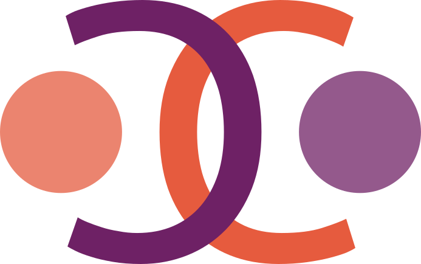
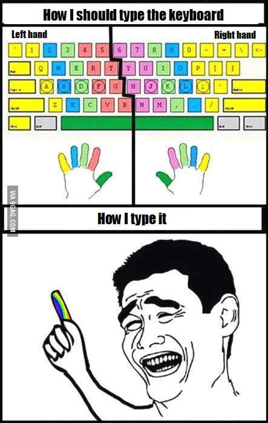
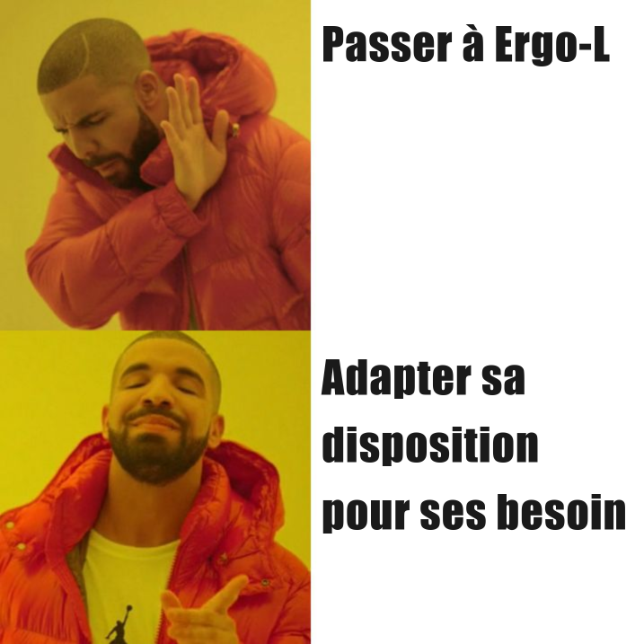
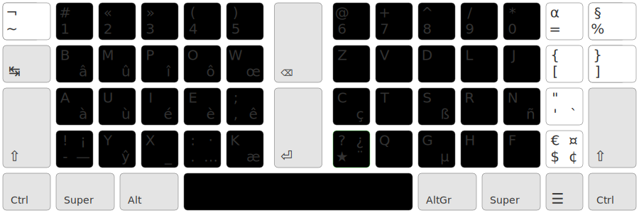
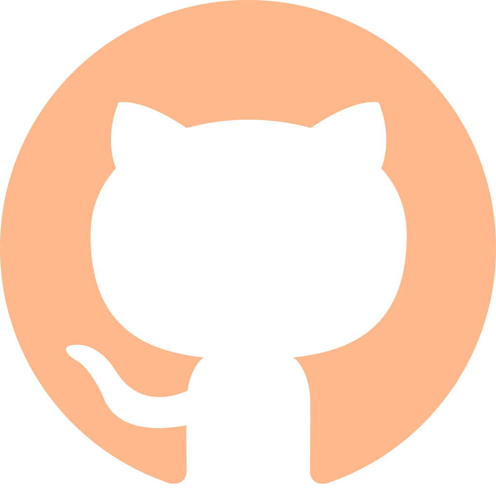
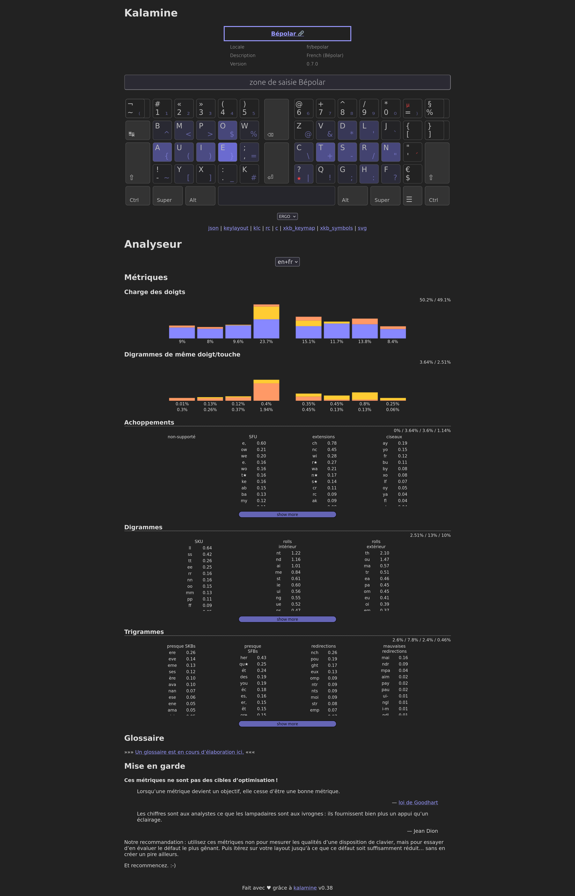

Kalamine --------------------------------- <br> #### **Créer la disposition clavier de vos rêves en un claquement de doigt** <br>  <br> 👥 **Cédric CORRÈGE** <span style="color:var(--r-italic-color)">|</span> 📅 **2024-11-16** <!-- --> --- Plan ------------ 1. Notions d’Eregonomie 2. Introduction à Kalamine / créer sa disposition 3. Hands-on
Taper à 10 doigts ? ------------------------------ Taper à ~~10~~ 9 doigts (même en Azerty) est le plus gros gain d’ergonomie possible <p class="fragment fade-in" ></p> --- XP Personelle ----------------------- Ma route ergonomique : - **2004** : Qwerty(-int) - **2018** : _Posture_ - **2022** : Bépo (Apprentissage) - « Hunt & Peck » → _Dactylo_ - **2023** : _Bépolar_ (Création & Utilisation) - **2023** (late) : _Arsenik_-like - **2024** : Ergo‑L + _Variante A_ (angle-mod) --- L’ergonomie Clavier -------------------------------- qu’ont-il en commun ? <table> <tr> <td> <img src="img/azerty_user.avif" height="200em" alt="Un bras cassé qui lève le pouce"> </td> <td> <img src="img/bepo_user.avif" height="200em" alt="Un jeune homme qui tient son bras cassé avec peine"> </td> </tr> <tr> <td> <p class="fragment fade-in">Un utilisateur heureux d’Azerty</p> </td> <td> <p class="fragment fade-in">Un utilisateur de Bépo qui se pose des questions</p> </td> </tr> </table> --- L’ergonomie Clavier ---------------------------------- **Confort _sans_ blessure** 1. La posture 2. Le clavier ([Clavier split compact bien](https://www.researchgate.net/publication/12913559_Workplace_Use_of_an_Adjustable_Keyboard_Adjustment_Preferences_and_Effect_on_Wrist_Posture)) 3. La disposition <p class="fragment fade-in"> <br> <caption>Il utilise Ergo‑L</caption> </p> --- La disposition -------------- _c.f._ Kazé <blockquote class="fragment fade-in-then-out"> « Arsenik, l’ergonomie clavier libre et gratuite » </blockquote> <div class="fragment fade-in" style="font-size: smaller;"> 1. supprimer les mouvements inconfortables - déviations ulnaires — [cause de TMS](https://onlinelibrary.wiley.com/doi/epdf/10.1002/jor.20599) - extensions latérales des auriculaires 2. diminuer le travail des doigts - Travail = Force × Déplacement - réduire les erreurs de saisie 3. faciliter la productivité - <kbd>Alt</kbd>-<kbd>Tab</kbd> <kbd>Ctrl</kbd>-<kbd>Z</kbd><kbd>X</kbd><kbd>C</kbd><kbd>V</kbd>, <kbd>H</kbd><kbd>J</kbd><kbd>K</kbd><kbd>L</kbd>… </div> --- La voie rapide ? ------------------- La pillule bleu → [Ergo‑L](https://ergol.org/) 🚀 (fr+en) --- La solution (de la flemme) -------------------------------------------- 
Kalamine ---------------- <i>K</i>eyboard <i>L</i>ayout <i>M</i>aker **But** : Améliorer la science des claviers grâce à l’expérimentation - 💥 **Multi-plateformes** : Création de pilotes = grande friction - 🧑💻 **Pensé pour le plus grand monde** : CLI puis version web en cours - 🐍 **Écrit en python** : contribution simplifiée --- Ce que kalamine ne fait pas (encore) ----------------------------------------------------------- - Support des dispositions à 10 doigts : lettre sous un pouce, changement de <kbd>Alt</kbd>, <kbd>Ctrl</kbd>… - Support des options proposées pas les clavier programmable : touche magique, caps-word… - Support de touches mortes personaliées (mise à part <kbd>★</kbd>) --- Par où Commencer ? -------------- 1. <span class="fragment highlight-red">supprimer les mouvements inconfortables</span> 2. <span class="fragment highlight-blue">supprimer le travail des doigts </span> 3. <span class="fragment fade-out">faciliter la productivité</span> --- Améliorer Bépo pour --------------------- <div style="font-size: smaller;"> - En faire une adaptation 1DFH (et le rendre compatible avec l’anglais) - Faire une couche AltGr optimisée pour la contribution à Kalamine </div> ```bash kalamine new layout.toml --altgr --geometry ISO --1dk ``` --- Layout.toml ------------ <pre data-id="code-animation"><code class="hljs javascript" data-trim data-line-numbers="|1-10|13-28|32-47|50-54|184-189|192-196|208-214"><script type="text/template"> # kalamine keyboard layout descriptor name = "qwerty-custom" # full layout name, displayed in the keyboard settings name8 = "custom" # short Windows filename: no spaces, no special chars locale = "us" # locale/language id variant = "custom" # layout variant id author = "nobody" # author name description = "custom QWERTY layout" url = "https://OneDeadKey.github.com/kalamine" version = "0.0.1" geometry = "ISO" base = ''' ┌─────┬─────┬─────┬─────┬─────┬─────┬─────┬─────┬─────┬─────┬─────┬─────┬─────┲━━━━━━━━━━┓ │ ~ │ ! │ @ │ # │ $ │ % │ ^ │ & │ * │ ( │ ) │ _ │ + ┃ ┃ │ ` │ 1 │ 2 « │ 3 » │ 4 │ 5 € │ 6 │ 7 │ 8 │ 9 │ 0 │ - │ = ┃ ⌫ ┃ ┢━━━━━┷━━┱──┴──┬──┴──┬──┴──┬──┴──┬──┴──┬──┴──┬──┴──┬──┴──┬──┴──┬──┴──┬──┴──┬──┺━━┳━━━━━━━┫ ┃ ┃ Q │ W │ E │ R │ T │ Y │ U │ I │ O │ P │ { │ } ┃ ┃ ┃ ↹ ┃ │ │ é │ │ │ ý │ ú │ í │ ó │ │ [ │ ] ┃ ┃ ┣━━━━━━━━┻┱────┴┬────┴┬────┴┬────┴┬────┴┬────┴┬────┴┬────┴┬────┴┬────┴┬────┴┬────┺┓ ⏎ ┃ ┃ ┃ A │ S │ D │ F │ G │ H │ J │ K │ L │ : │*¨ │ | ┃ ┃ ┃ ⇬ ┃ á │ │ │ │ │ │ │ │ │ ; │** ' │ \ ┃ ┃ ┣━━━━━━┳━━┹──┬──┴──┬──┴──┬──┴──┬──┴──┬──┴──┬──┴──┬──┴──┬──┴──┬──┴──┬──┴──┲━━┷━━━━━┻━━━━━━┫ ┃ ┃ | │ Z │ X │ C │ V │ B │ N │ M │ < • │ > │ ? ┃ ┃ ┃ ⇧ ┃ \ │ │ │ ç │ │ │ │ µ │ , · │ . … │ / ┃ ⇧ ┃ ┣━━━━━━┻┳━━━━┷━━┳━━┷━━━━┱┴─────┴─────┴─────┴─────┴─────┴─┲━━━┷━━━┳━┷━━━━━╋━━━━━━━┳━━━━━━━┫ ┃ ┃ ┃ ┃ ┃ ┃ ┃ ┃ ┃ ┃ Ctrl ┃ super ┃ Alt ┃ ␣ ┃ AltGr ┃ super ┃ menu ┃ Ctrl ┃ ┗━━━━━━━┻━━━━━━━┻━━━━━━━┹────────────────────────────────┺━━━━━━━┻━━━━━━━┻━━━━━━━┻━━━━━━━┛ ''' altgr = ''' ┌─────┬─────┬─────┬─────┬─────┬─────┬─────┬─────┬─────┬─────┬─────┬─────┬─────┲━━━━━━━━━━┓ │ *~ │ │ │ │ │ │ │ │ │ │ │ │ ┃ ┃ │ *` │ │ │ │ │ │ *^ │ │ │ │ │ │ ┃ ⌫ ┃ ┢━━━━━┷━━┱──┴──┬──┴──┬──┴──┬──┴──┬──┴──┬──┴──┬──┴──┬──┴──┬──┴──┬──┴──┬──┴──┬──┺━━┳━━━━━━━┫ ┃ ┃ │ │ │ │ │ │ │ │ │ │ │ ┃ ┃ ┃ ↹ ┃ @ │ < │ > │ $ │ % │ ^ │ & │ * │ ' │ ` │ │ ┃ ┃ ┣━━━━━━━━┻┱────┴┬────┴┬────┴┬────┴┬────┴┬────┴┬────┴┬────┴┬────┴┬────┴┬────┴┬────┺┓ ⏎ ┃ ┃ ┃ │ │ │ │ │ │ │ │ │ │ *¨ │ ┃ ┃ ┃ ⇬ ┃ { │ ( │ ) │ } │ = │ \ │ + │ - │ / │ " │ *´ │ ┃ ┃ ┣━━━━━━┳━━┹──┬──┴──┬──┴──┬──┴──┬──┴──┬──┴──┬──┴──┬──┴──┬──┴──┬──┴──┬──┴──┲━━┷━━━━━┻━━━━━━┫ ┃ ┃ │ │ │ │ │ │ │ │ │ │ ┃ ┃ ┃ ⇧ ┃ │ ~ │ [ │ ] │ _ │ # │ | │ ! │ ; │ : │ ? ┃ ⇧ ┃ ┣━━━━━━┻┳━━━━┷━━┳━━┷━━━━┱┴─────┴─────┴─────┴─────┴─────┴─┲━━━┷━━━┳━┷━━━━━╋━━━━━━━┳━━━━━━━┫ ┃ ┃ ┃ ┃ ┃ ┃ ┃ ┃ ┃ ┃ Ctrl ┃ super ┃ Alt ┃ ␣ ┃ AltGr ┃ super ┃ menu ┃ Ctrl ┃ ┗━━━━━━━┻━━━━━━━┻━━━━━━━┹────────────────────────────────┺━━━━━━━┻━━━━━━━┻━━━━━━━┻━━━━━━━┛ ''' [spacebar] 1dk = "'" # apostrophe 1dk_shift = "'" # apostrophe # -------------------------------------------------------------------------------- # Layers # -------------------------------------------------------------------------------- # # ### base # # The `base` layer contains the base and shifted keys: # # +-----+ # shift -------> | ? | # base --------> | / | # +-----+ # # When the base and shift keys correspond to the same character, you may only # specify the uppercase char: # # +-----+ # shift -------> | A | # (base = a) --> | | # +-----+ # # # ### altgr # # The `altgr` layer contains the altgr and shift+altgr symbols: # # +-----+ # | | <----- (altgr+shift+key is undefined) # | { | <----- altgr+key = { # +-----+ # # # ### full # # The `full` view lets you specify the `base` and `altgr` levels together: # # +-----+ # shift -------> | A | <----- (altgr+shift+key is undefined) # (base = a) --> | { | <----- altgr+key = { # +-----+ # -------------------------------------------------------------------------------- # Dead Keys # -------------------------------------------------------------------------------- # # ### Usage # # Dead keys are preceded by a `*` sign. They can be used in the `base` layer: # # +-----+ # shift -------> |*" | = dead diaeresis # base --------> |*´ | = dead acute accent # +-----+ # # … as well as in the `altgr` layer: # # +-----+ # | *" | <----- altgr+shift+key = dead diaeresis # | *´ | <----- altgr+key = dead acute accent # +-----+ # # … and combined in the `full` layer: # # +-----+ # shift+key = A --> | A*" | <----- altgr+shift+key = dead diaeresis # key = a --> | a*´ | <----- altgr+key = dead acute accent # +-----+ # # # ### Standard Dead Keys # # The following dead keys are supported, and their behavior cannot be customized: # # id XKB name base -> accented chars # ---------------------------------------------------------------------------- # *` grave AaEeIiNnOoUuWwYyЕеИи # -> ÀàÈèÌìǸǹÒòÙùẀẁỲỳЀѐЍѝ # *‟ doublegrave AaEeIiOoRrUuѴѴ # -> ȀȁȄȅȈȉȌȍȐȑȔȕѶѷ # *´ acute AaCcEeGgIiKkLlMmNnOoPpRrSsUuWwYyZzΑαΕεΗηΙιΟοΥυΩωГгКк # -> ÁáĆćÉéǴǵÍíḰḱĹĺḾḿŃńÓóṔṕŔশÚúẂẃÝýŹźΆάΈέΉήΊίΌόΎύΏώЃѓЌќ # *” doubleacute OoUuУу # -> ŐőŰűӲӳ # *^ circumflex AaCcEeGgHhIiJjOoSsUuWwYyZz0123456789()+-= # -> ÂâĈĉÊêĜĝĤĥÎîĴĵÔôŜŝÛûŴŵŶŷẐẑ⁰¹²³⁴⁵⁶⁷⁸⁹⁽⁾⁺⁻⁼ # *ˇ caron AaCcDdEeGgHhIiKkLlNnOoRrSsTtUuZzƷʒ0123456789()+-= # -> ǍǎČčĎďĚěǦǧȞȟǏǐǨǩĽľŇňǑǒŘřŠšŤťǓǔŽžǮǯ₀₁₂₃₄₅₆₇₈₉₍₎₊₋₌ # *˘ breve AaEeGgIiOoUuΑαΙιΥυАаЕеЖжИиУу # -> ĂăĔĕĞğĬĭŎŏŬŭᾸᾰῘῐῨῠӐӑӖӗӁӂЙйЎў # *⁻ invertedbreve AaEeIiOoUuRr # -> ȂȃȆȇȊȋȎȏȖȗȒȓ # *~ tilde AaEeIiNnOoUuVvYy<>= # -> ÃãẼẽĨĩÑñÕõŨũṼṽỸỹ≲≳≃ # *¯ macron AaÆæEeGgIiOoUuYy # -> ĀāǢǣĒēḠḡĪīŌōŪūȲȳ # *¨ diaeresis AaEeHhIiOotUuWwXxYyΙιΥυАаЕеӘәЖжЗзИиІіОоӨөУуЧчЫыЭэ # -> ÄäËëḦḧÏïÖöẗÜüẄẅẌẍŸÿΪϊΫϋӒӓЁёӚӛӜӝӞӟӤӥЇїӦӧӪӫӰӱӴӵӸӹӬӭ # *˚ abovering AaUuwy # -> ÅåŮůẘẙ # *¸ cedilla CcDdEeGgHhKkLlNnRrSsTt # -> ÇçḐḑȨȩĢģḨḩĶķĻļŅņŖŗŞşŢţ # *, belowcomma SsTt # -> ȘșȚț # *˛ ogonek AaEeIiOoUu # -> ĄąĘęĮįǪǫŲų # */ stroke AaBbCcDdEeGgHhIiJjLlOoPpRrTtUuYyZz<≤≥>= # -> ȺⱥɃƀȻȼĐđɆɇǤǥĦħƗɨɈɉŁłØøⱣᵽɌɍŦŧɄʉɎɏƵƶ≮≰≱≯≠ # *˙ abovedot AaBbCcDdEeFfGgHhIijLlMmNnOoPpRrSsTtWwXxYyZz # -> ȦȧḂḃĊċḊḋĖėḞḟĠġḢḣİıȷĿŀṀṁṄṅȮȯṖṗṘṙṠṡṪṫẆẇẊẋẎẏŻż # *. belowdot AaBbDdEeHhIiKkLlMmNnOoRrSsTtUuVvWwYyZz # -> ẠạḄḅḌḍẸẹḤḥỊịḲḳḶḷṂṃṆṇỌọṚṛṢṣṬṭỤụṾṿẈẉỴỵẒẓ # *µ greek AaBbDdEeFfGgHhIiJjKkLlMmNnOoPpQqRrSsTtUuWwXxYyZz # -> ΑαΒβΔδΕεΦφΓγΗηΙιΘθΚκΛλΜμΝνΟοΠπΧχΡρΣσΤτΥυΩωΞξΨψΖζ # *¤ currency AaBbÇCçcDdEeFfGgHhIiKkLlMmNnOoPpRrSsTtþÞUuWwYy # -> ₳؋₱฿₵₡₵¢₯₫₠€₣ƒ₲₲₴₴៛﷼₭₭₤£ℳ₥₦₦૱௹₧₰₨₢$₪₮৳৲৲圓元₩₩円¥ # # ### Custom Dead Key # # There is one dead key (1dk), noted `**`, that can be customized by specifying # how it modifies each character in the `base` layer: # # +-----+ # shift -------> | ? ¿ | <----- 1dk, shift+key # base --------> | / ÷ | <----- 1dk, key # +-----+ # # When the base and shift keys correspond to the same accented character, you may # only specify the lowercase accented char in the `base` layer: # # +-----+ # shift -------> | A | <----- (1dk, shift+key = À) # (base = a) --> | à | <----- 1dk, key = à # +-----+ # # You may also chain dead keys by specifying a dead key in the `1dk` layer: # # +-----+ # shift -------> | G | # (base = g) --> | *µ | <----- 1dk, key = dead Greek # +-----+ # # **Warning:** chained dead keys are not supported by MSKLC, and KbdEdit will be # required to build a Windows driver for such a keyboard layout. # -------------------------------------------------------------------------------- # Space Bar # -------------------------------------------------------------------------------- # # Kalamine descriptor files have an optional section to define specific behaviors # of the space bar in non-base layers: # # [spacebar] # shift = "\u202f" # NARROW NO-BREAK SPACE # altgr = "\u0020" # SPACE # altgr_shift = "\u00a0" # NO-BREAK SPACE # 1dk = "\u2019" # RIGHT SINGLE QUOTATION MARK # 1dk_shift = "\u2019" # RIGHT SINGLE QUOTATION MARK # # Kalamine doesn’t support non-space chars on the `base` layer for the space bar. # Space characters outside of the space bar are not supported either. </script></code></pre> --- Bépolar ------- 1. écriture « littéraire » via la couche _α_ et _typo_ - Les lettres → couche α - Les diacritiques → couche typo - Les syboles typographique → couche typo 2. placement des lettre pour _favoriser les enchainements confortables_ 3. les ponctuations double en couche shift 4. placement de la _touche typo <kbd>★</kbd> sur l’annulaire_ (quand c’est possible) --- Bépolar --------  <a href="https://github.com/Ced-C/Bepolar"></a> --- Les stats ---------- ``` kalamine watch Bépolar.toml ```  --- Les stats ---------- ``` kalamine watch Bépolar.toml ``` <iframe src="http://localhost:1664/#/bepolar/ol60/en+fr" height="500em" width="1000em"></iframe> --- Kalamine vs. QMK ------------------------------ Todo